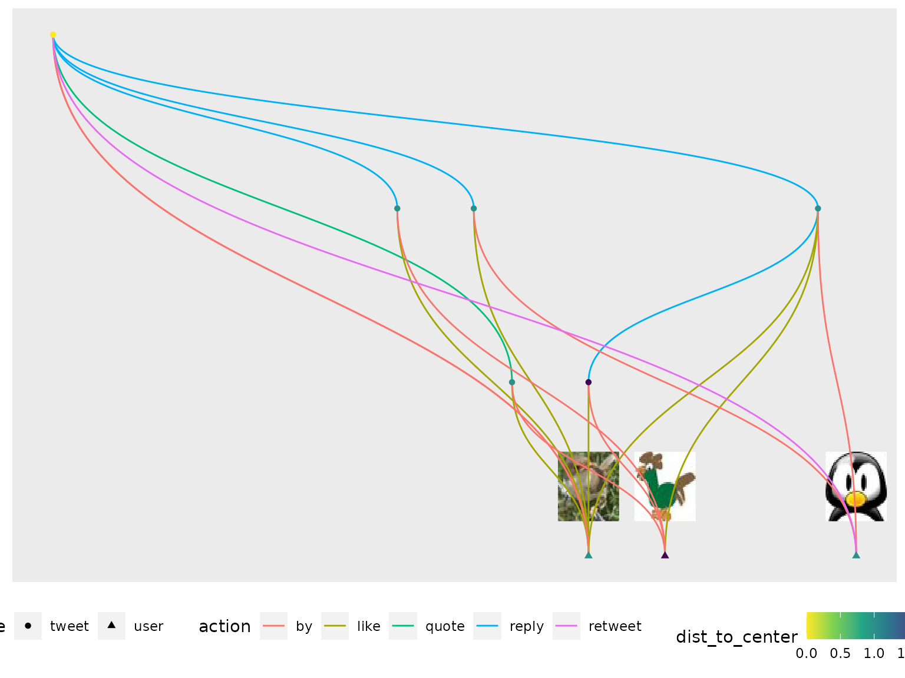

This vignette shows how {rtweettree} can be used to generate network graphs visualizing the tweets (replies and quotes) and favorites resulting of a tweet on twitter that can be acquired via the twitter API by the excellent package {rtweet}.
Scraping
Unfortunately, the twitter API (rtweet is based on) doesn’t allow to scrape all sub tweets. For small amounts of replies/quotes/likes this often results in no subtweets at all. On the other hand, for large amounts it can take a long time due to rate limits (please refer to the twitter developer website on rate limits, or the documentation of the rtweet functions).
Scrape tweets
Tweets on twitter are uniquely classified via the status id:
# Replace this number by any status_id (the last number in the twitter.com url of a tweet):
main_status_id <- "1291490153559724033"The corresponding information on twitter is acquired via rtweet::lookup_statuses:
df_main_status <- rtweet::lookup_statuses(main_status_id)The function search_tree() calls the recursive function add_tree_level() for the status ids of all resulting subtweets until all available information was scraped from twitter:
# Scrape available subtweets:
df_tree <- search_tree(main_status_id)Scrape timelines
The timelines of all users involved are scraped:
tree_ids <- df_tree$user_id %>% unique()
# Scrape the timelines of the users scraped:
# TODO: repair!
# df_tls <- scrape_timelines(tree_ids)
df_tls <- rtweet::get_timelines(tree_ids)Scrape likes
The favorites of all users involved are scraped:
df0 <- df_main_status %>%
dplyr::filter(status_id == main_status_id) %>%
dplyr::select(to = status_id, user_id) %>%
dplyr::mutate(from = "root", type = "root")
tweet_edges <-
find_connections_rec(dplyr::bind_rows(df_tree, df_tls), df0)
ids <- tweet_edges$user_id %>% unique()
# Scrape the likes of the users scraped:
df_favs <- scrape_favs2(ids, main_status_id)Create tbl_graph object
The relevant twitter information of these tweets is translated into a tidygraph network object:
g <-
create_tweet_tbl_graph(df_main_status, df_tree, df_tls, df_favs) %>%
mutate_at(c("screen_name", "label"), ~(factor(.)) %>% as.numeric()) %E>%
mutate_at(c("screen_name"), ~(factor(.)) %>% as.numeric())
usethis::use_data(g, overwrite = TRUE, internal = TRUE)
# saveRDS(g, paste0(here::here(), "/vignettes/visualize_tree_files/tbl_graph.RDS"))
# g <- readRDS(paste0(here::here(), "/vignettes/visualize_tree_files/tbl_graph.RDS"))Visualize graphs
Using ggraph
Circlepack plot:
p <- g %>%
ggraph('circlepack', circular = T) +
geom_node_circle(aes(fill = dist_to_center), n = 50) +
scale_fill_viridis_c(direction = -1) +
coord_fixed() +
# remove legend entry:
guides(fill = FALSE)
#> Multiple parents. Unfolding graph
#> Warning: `guides(<scale> = FALSE)` is deprecated. Please use `guides(<scale> =
#> "none")` instead.
p
Hierarchical tree plot:
g1 <- g %>% ggraph()
#> Using `sugiyama` as default layout
# Hack to put all user nodes on the bottom line of the graph:
g1$data$y[g1$data$type == "user"] <- min(g1$data$y)
g1 +
geom_edge_diagonal(aes(color= type)) +
scale_edge_colour_hue(name = "action") +
geom_node_point(aes(color = dist_to_center,
shape = type)) +
scale_color_viridis_c(direction = -1) +
# remove legend entry
guides(color = FALSE)
#> Warning: `guides(<scale> = FALSE)` is deprecated. Please use `guides(<scale> =
#> "none")` instead.
Using ggiraph (for interactivity)
- Hover over the nodes to see the tweets/users. (in order to comply to the twitter terms of use this information will be anonymized for this public vignette; see below)
- Click on the nodes to open the tweets/users on twitter.com
# Add on click information to the graph nodes:
g1$data$onclick <- glue::glue('window.open("{g1$data$url}")')
# anonymize hover information, as it is not allowed to publish this:
g1$data$label <- sample(LETTERS, length(g1$data$label))
# Reproduce the above ggraph using the according ggiraph components:
g2 <- g1 +
geom_edge_diagonal(aes(color= type)) +
ggforce::geom_mark_rect(aes(x = g1$data$x,
y = g1$data$y,
# filter = type == 'user',
color = g1$data$type)
) +
scale_color_discrete(name = "type") +
geom_point_interactive(aes(x=g1$data$x,
y = g1$data$y,
color = type,
data_id = g1$data$screen_name,
tooltip = g1$data$label,
onclick = g1$data$onclick),
size = 3)
p <- girafe(code = print(g2), width_svg = 6, height_svg = 5)
p <- girafe_options(x = p,
opts_zoom(min = 0.3, max = 5),
opts_hover(girafe_css(css = "stroke:yellow;",
point = "stroke-width:6px")))
p